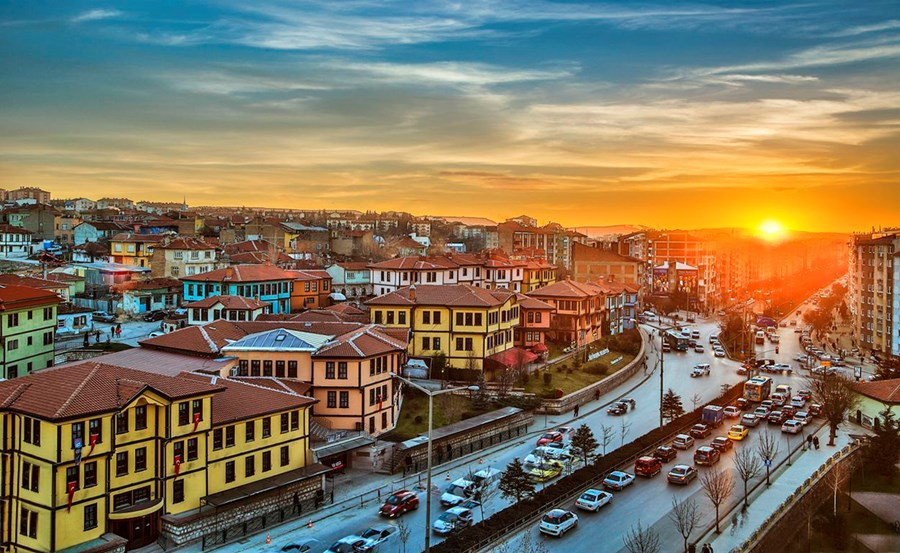

Odunpazarı semti kentin güneyindeki tepelerde kurulmuştur. Geleneksel Anadolu Türk Mimarisi örneklerini koruyan semt, kıvrımlı yolları, çıkmaz sokakları. Ahşap süslemeli bitişik düzenli cumbalı evleri ile örf, adet ve geleneklerini koruyarak günümüze kadar gelmiştir. Evliya Çelebi’nin Seyahatname’sinde de adından büyük bir övgü ile söz edilen Odunpazarı, bugün Seyahatname’de adı geçen sokakların 5’ini aynı ismi ile korumaya devam etmektedir. Bölgede evlerin yanı sıra döneme özgü Kurşunlu Camii ve Külliyesi de bulunmaktadır. Ayrıca bölgenin geleneksel el sanatlarının örneklerini görebileceğiniz tarihi Atlıhan, Eskişehir Sanatları Çarşıları ve dünyada sadece Odunpazarı’nda bulunan Lületaşı Müzesi de mutlaka ziyaret edilmesi gereken yerlerin arasında yer alır. Odunpazarı; geleneksel el sanatları konusunda bakır işlemeciliği, kalaycılık, antika ve ahşap oymacılığı meraklılarının önemli bir uğrak noktasıdır. Beyler Sokağı’nda yer alan antikacı, Kurşunlu Camii Sokağı’nda yer alan ahşap oyuncakçı, bölgeye akın eden ziyaretçilere Odunpazarı’ndan küçük ama çok özel anı objeleri ile sevdiklerine hoş bir sürpriz yapma imkânı sunmaktadır.
